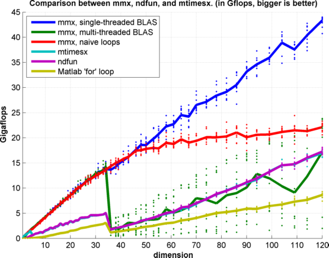

MMX - Multithreaded matrix operations on N-D matrices
mmx treats an N-D matrix of double precision values as a set of pages of 2D matrices, and performs various matrix operations on those pages. mmx uses multithreading over the higher dimensions to achieve good performance. Full singleton expansion is available for most operations.
Contents
Fast N-D Multiplication
n = 80; % rows m = 40; % columns N = 10000; % pages A = randn(n,m,N); B = randn(m,n,N); tic; C = mmx('mult', A, B); toc
Elapsed time is 0.258383 seconds.
C2 = zeros(n,n,N); tic; for i=1:N C2(:,:,i) = A(:,:,i)*B(:,:,i); end toc
Elapsed time is 1.334189 seconds.
dispx = @(x) fprintf('difference = %g\n',x);
dispx(max(abs(C(:)-C2(:))))
difference = 0
Multi-threading along the pages
Other packages like Peter Boettcher's venerable ndfun Or James Tursa's mtimesx rely on multithreading inside the threads using multithreaded BLAS libraries. It turns out that if you want to operate on many small matrices, it makes more sense to let each thread operate on a matrix independently. Actually it's possible mtimesx tries to do this using OMP but it doesn't seem to work that well.
tic;
mtimesx(A, B, 'speedomp');
toc
Elapsed time is 0.842090 seconds.
Full performance comparison
compare_mult_flops;
multiplying 60*1250000 matrix pairs of dimension [1x1] multiplying 60*312500 matrix pairs of dimension [2x2] multiplying 60*138889 matrix pairs of dimension [3x3] multiplying 60*78125 matrix pairs of dimension [4x4] multiplying 60*50000 matrix pairs of dimension [5x5] multiplying 60*34722 matrix pairs of dimension [6x6] multiplying 60*25510 matrix pairs of dimension [7x7] multiplying 60*19531 matrix pairs of dimension [8x8] multiplying 60*15432 matrix pairs of dimension [9x9] multiplying 60*12500 matrix pairs of dimension [10x10] multiplying 60*10331 matrix pairs of dimension [11x11] multiplying 60*8681 matrix pairs of dimension [12x12] multiplying 60*7396 matrix pairs of dimension [13x13] multiplying 60*6378 matrix pairs of dimension [14x14] multiplying 60*5556 matrix pairs of dimension [15x15] multiplying 60*4883 matrix pairs of dimension [16x16] multiplying 60*4325 matrix pairs of dimension [17x17] multiplying 60*3858 matrix pairs of dimension [18x18] multiplying 60*3463 matrix pairs of dimension [19x19] multiplying 60*3125 matrix pairs of dimension [20x20] multiplying 60*2834 matrix pairs of dimension [21x21] multiplying 60*2583 matrix pairs of dimension [22x22] multiplying 60*2363 matrix pairs of dimension [23x23] multiplying 60*2170 matrix pairs of dimension [24x24] multiplying 60*1849 matrix pairs of dimension [26x26] multiplying 60*1715 matrix pairs of dimension [27x27] multiplying 60*1594 matrix pairs of dimension [28x28] multiplying 60*1389 matrix pairs of dimension [30x30] multiplying 60*1301 matrix pairs of dimension [31x31] multiplying 60*1148 matrix pairs of dimension [33x33] multiplying 60*1081 matrix pairs of dimension [34x34] multiplying 60*965 matrix pairs of dimension [36x36] multiplying 60*866 matrix pairs of dimension [38x38] multiplying 60*822 matrix pairs of dimension [39x39] multiplying 60*744 matrix pairs of dimension [41x41] multiplying 60*676 matrix pairs of dimension [43x43] multiplying 60*591 matrix pairs of dimension [46x46] multiplying 60*543 matrix pairs of dimension [48x48] multiplying 60*500 matrix pairs of dimension [50x50] multiplying 60*445 matrix pairs of dimension [53x53] multiplying 60*413 matrix pairs of dimension [55x55] multiplying 60*372 matrix pairs of dimension [58x58] multiplying 60*336 matrix pairs of dimension [61x61] multiplying 60*305 matrix pairs of dimension [64x64] multiplying 60*278 matrix pairs of dimension [67x67] multiplying 60*255 matrix pairs of dimension [70x70] multiplying 60*228 matrix pairs of dimension [74x74] multiplying 60*205 matrix pairs of dimension [78x78] multiplying 60*186 matrix pairs of dimension [82x82] multiplying 60*169 matrix pairs of dimension [86x86] multiplying 60*154 matrix pairs of dimension [90x90] multiplying 60*141 matrix pairs of dimension [94x94] multiplying 60*128 matrix pairs of dimension [99x99] multiplying 60*116 matrix pairs of dimension [104x104] multiplying 60*105 matrix pairs of dimension [109x109] multiplying 60*96 matrix pairs of dimension [114x114] multiplying 60*87 matrix pairs of dimension [120x120]
You can see how around dimension 35, when the low-level multi-threading kicks in, the CPU get flooded with threads and efficiency drops.
Singleton Expansion
Singleton expansion is supported for dimensions > 2
A = randn(5,4,3,10,1); B = randn(4,6,1,1 ,6); C = zeros(5,6,3,10,6); for i = 1:3 for j = 1:10 for k = 1:6 C(:,:,i,j,k) = A(:,:,i,j,1) * B(:,:,1,1,k); end end end diff = C - mmx('mult',A,B); dispx(norm(diff(:)))
difference = 0
Transpose Flags
C = MMX('mult', A, B, mod) where mod is a modifier string, will transpose one or both of A and B. Possible values for mod are 'tn', 'nt' and 'tt' where 't' stands for transposed and 'n' for not-transposed . For example
A = randn(n,n); B = randn(n,n); dispx(norm(mmx('mult',A,B) - A *B)); dispx(norm(mmx('mult',A,B,'tn') - A'*B)); dispx(norm(mmx('mult',A,B,'tt') - A'*B')); dispx(norm(mmx('mult',A,B,'nt') - A *B'));
difference = 0 difference = 0 difference = 0 difference = 0
Matrix Squaring
A = randn(n,m); B = randn(n,m); dispx(norm(mmx('square',A,[]) - A*A' )); dispx(norm(mmx('square',A, B) - 0.5*(A*B'+B*A') )); dispx(norm(mmx('square',A,[],'t') - A'*A )); dispx(norm(mmx('square',A, B,'t') - 0.5*(A'*B+B'*A) ));
difference = 2.25283e-14 difference = 0 difference = 5.22422e-14 difference = 0
Results do not always equal Matlab's results, but are within machine precision thereof.
Cholesky factorization
A = randn(n,n);
A = A*A';
dispx(norm(mmx('chol',A,[]) - chol(A)));
difference = 0
Timing comparison:
A = randn(n,n,N); A = mmx('square',A,[]); tic; C = mmx('chol',A,[]); toc C2 = zeros(n,n,N); tic; for i=1:N C2(:,:,i) = chol(A(:,:,i)); end toc
Elapsed time is 0.002502 seconds. Elapsed time is 0.012015 seconds.
Backslash
Unlike other commands, 'backslash' does not support singleton expansion. If A is square, mmx will use LU factorization, otherwise it will use QR factorization.
B = randn(n,m); A = randn(n,n);
General:
dispx(norm(mmx('backslash',A,B) - A\B));
difference = 1.06155e-09
Triangular:
% upper: Au = triu(A) + abs(diag(diag(A))) + eye(n); %no small values on the diagonal dispx(norm(mmx('backslash',Au,B,'u') - Au\B)); % lower: Al = tril(A) + abs(diag(diag(A))) + eye(n); %no small values on the diagonal dispx(norm(mmx('backslash',Al,B,'l') - Al\B));
difference = 0.00065334 difference = 7.69608e-06
Symmetric Positive Definite:
AA = A*A'; dispx(norm(mmx('backslash',AA,B,'p') - AA\B));
difference = 0.000211305
Cholesky/LU timing comparison:
A = randn(n,n,N); A = mmx('square',A,[]); B = randn(n,1,N); tic; mmx('backslash',A,B); % uses LU toc tic; mmx('backslash',A,B,'p'); % uses Cholesky toc
Elapsed time is 0.040181 seconds. Elapsed time is 0.005356 seconds.
Overdetermined:
A = randn(n,m);
B = randn(n,m);
dispx(norm(mmx('backslash',A,B) - A\B));
difference = 1.8724e-15
Underdetermined:
A = randn(m,n);
B = randn(m,n);
dispx(norm(mmx('backslash',A,B) - pinv(A)*B));
difference = 7.84436e-15
In the underdetermined case, (i.e. when size(A,1) < size(A,2)), mmx will give the least-norm solution which is equivalent to C = pinv(A)*B, unlike matlab's mldivide.
Thread control
mmx will automatically start a number of threads equal to the number of available processors, however the number can be set manually to n using the command mmx(n). The command mmx(0) clears the threads from memory. Changing the threadcount quickly without computing anything, as in
for i=1:5 mmx(i); end
can cause problems. Don't do it.
Checking of special properties
The functions which assume special types of square matrices as input ('chol' and 'backslash' for 'U','L' or 'P' modifiers) do not check that the inputs are indeed what you say they are, and produce no error if they are not. Caveat computator.
Compilation
To compile run 'build_mmx'. Type 'help build_mmx' to read about compilation issues and options
Rant
Clearly there should be someone at Mathworks whose job it is to do this stuff. As someone who loves Matlab deeply, I hate to see its foundations left to rot. Please guys, allocate engineer-hours to the Matlab core, rather than the toolbox fiefdoms. We need full singleton expansion everywhere. Why isn't it the case that
[1 2] + [0 1]' == [1 2;2 3] ?
bsxfun() is a total hack, and polluting everybody's code. We need expansion on the pages like mmx(), but with transparent and smart use of both CPU and GPU. GPUArray? Are you kidding me? I shouldn't have to mess with that. Why is it that (for years now), the fastest implementation of repmat(), has been Minka's Lightspeed toolbox? Get your act together soon guys, or face obsolescence.